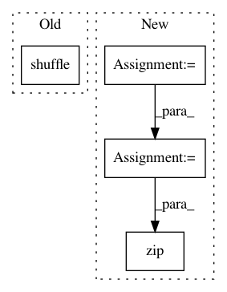

293f90f5460e8f7ba06965d5c1b1304925b5a142,examples/tsf/utils.py,,get_batches,#Any#Any#Any#Any#Any#,51
Before Change
n = len(x0)
if shuffle:
random.shuffle(x0)
random.shuffle(x1)
// order0 = range(n)
// z = sorted(zip(order0, x0), key=lambda i:len(i[1]))
After Change
// random.shuffle(x1)
if shuffle:
order0 = range(n)
z = sorted(zip(order0, x0), key=lambda i:len(i[1]))
order0, x0 = zip(*z)
order1 = range(n)
z = sorted(zip(order1, x1), key=lambda i:len(i[1]))
order1, x1 = zip(*z)
In pattern: SUPERPATTERN
Frequency: 3
Non-data size: 4
Instances
Project Name: asyml/texar
Commit Name: 293f90f5460e8f7ba06965d5c1b1304925b5a142
Time: 2017-12-02
Author: zichaoy@cs.cmu.edu
File Name: examples/tsf/utils.py
Class Name:
Method Name: get_batches
Project Name: tensorflow/models
Commit Name: 11e9c7adfbf7d50dd9ef4442cf7806cdb2ee2368
Time: 2017-11-17
Author: markdaoust@google.com
File Name: samples/core/get_started/premade_estimator.py
Class Name:
Method Name: main
Project Name: tensorflow/models
Commit Name: 11e9c7adfbf7d50dd9ef4442cf7806cdb2ee2368
Time: 2017-11-17
Author: markdaoust@google.com
File Name: samples/core/get_started/custom_estimator.py
Class Name:
Method Name: main